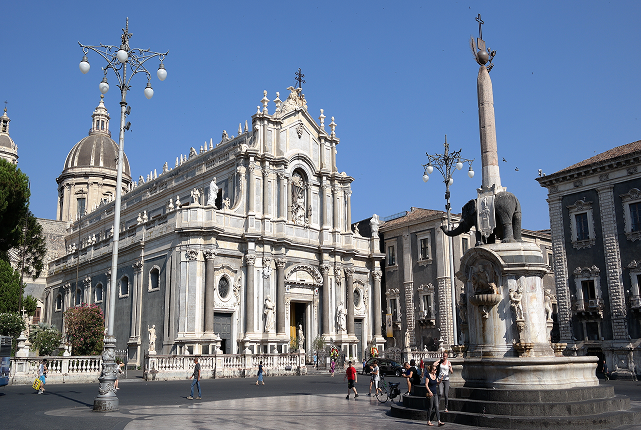
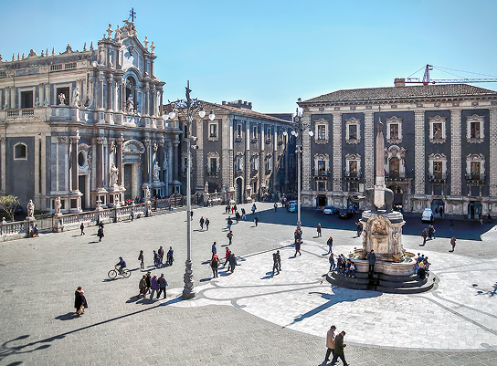
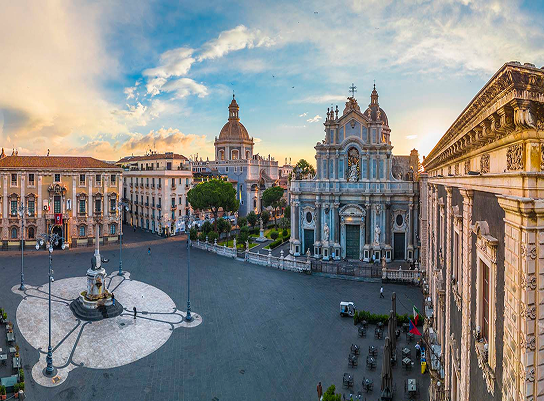
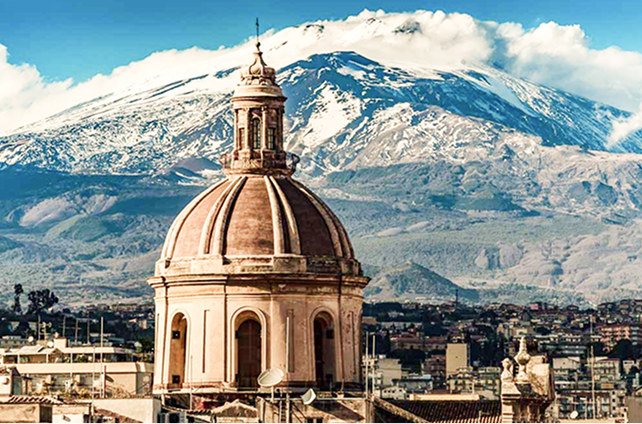

Il Liotru
Piazza Duomo è il cuore monumentale della città di Catania e rappresenta uno dei suoi luoghi più simbolici. È dominata dalla splendida Cattedrale di Sant'Agata, dedicata alla patrona della città. La piazza colpisce per la sua eleganza e per l’armonia degli edifici barocchi che la circondano. Al centro si trova la celebre Fontana dell'Elefante, simbolo di Catania, realizzata in pietra lavica. Questo monumento, chiamato affettuosamente “Liotru”, richiama il legame profondo della città con l’Etna e con la sua storia antica.
Le facciate in pietra chiara contrastano con i dettagli scuri della lava, creando un effetto visivo unico. Il Municipio e il Palazzo dei Chierici testimoniano la ricostruzione barocca dopo il terremoto del 1693. Durante il giorno la piazza è animata da cittadini e turisti che passeggiano o partecipano alle celebrazioni religiose. La sera, le luci valorizzano la cattedrale e la fontana, regalando un’atmosfera suggestiva. Piazza Duomo è così non solo un capolavoro artistico, ma anche un luogo vivo che rappresenta l’identità e l’orgoglio della città etnea. Oltre ai monumenti principali, Piazza Duomo offre scorci pittoreschi tra le vie adiacenti, dove si trovano caffè storici, botteghe artigiane e piccoli negozi che raccontano le tradizioni locali.


tra luce e tradizione
Passeggiare per queste strade significa immergersi nell’atmosfera quotidiana della città, osservando i dettagli architettonici, le porte decorate e i balconi in ferro battuto che caratterizzano il centro storico di Catania. Ogni angolo trasmette la fusione tra storia e vita contemporanea, rendendo la visita un’esperienza completa. Durante le festività religiose e civili, Piazza Duomo diventa il cuore pulsante della città. Processioni, concerti all’aperto e manifestazioni culturali animano lo spazio, creando un legame tra cittadini e visitatori.
L’area circostante si trasforma in un palcoscenico naturale, dove la bellezza del barocco siciliano si fonde con l’energia della vita urbana, offrendo momenti indimenticabili a chiunque decida di ammirarla. Infine, Piazza Duomo non è solo un luogo da osservare, ma anche da vivere. I numerosi eventi gastronomici, mercatini e iniziative culturali permettono di assaporare i colori, i sapori e i profumi di Catania, rendendo la piazza un centro vivo di socialità e incontro. Passeggiare qui significa comprendere l’anima della città, tra arte, storia e tradizione, lasciandosi affascinare dal connubio unico tra patrimonio monumentale e vita quotidiana.
